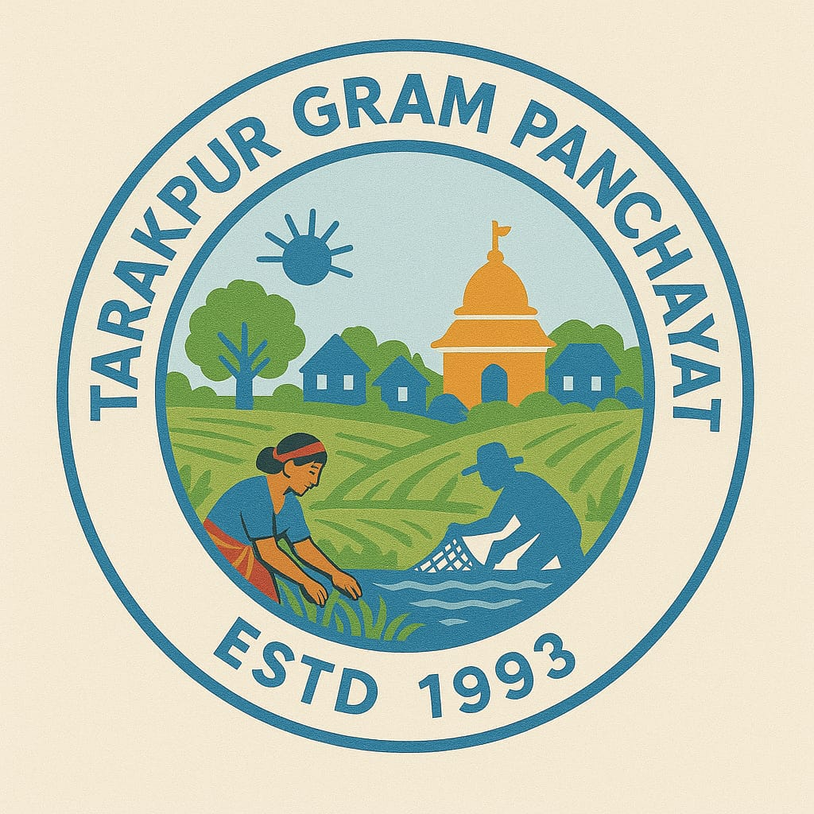
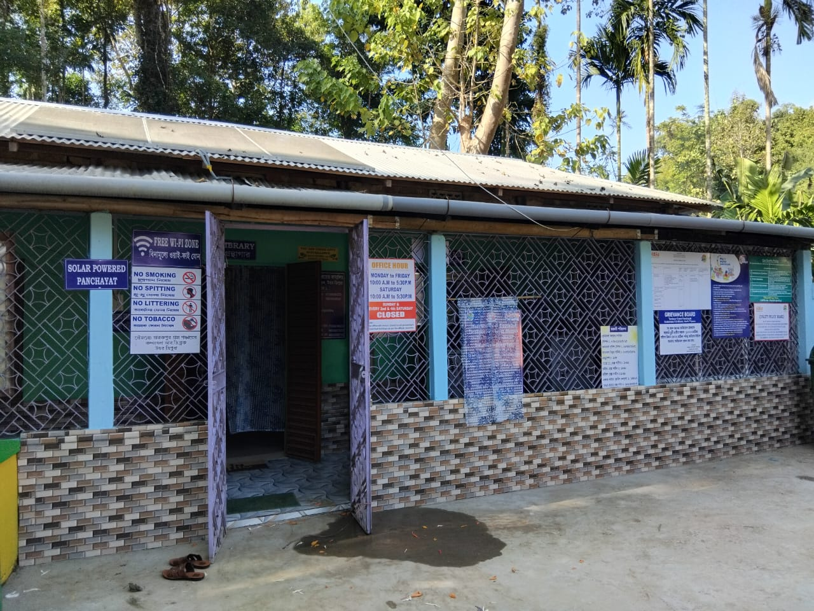

Suggestion and Feedback
Share ideas to improve Panchayat services and village development.
Submit Suggestion ↗
Kadamtala R.D. Block, North Tripura, Tripura
Access Panchayat service forms, submit suggestions or complaints, read public notices and learn about development activities in your village.
Explore Citizen Services ↓Local governance, public services and inclusive village development.
Established in 1993, Tarakpur Gram Panchayat serves a community of 4,275 people across 800 households and 6 wards. Located in a border village near the India–Bangladesh–Assam tri-junction, under Kadamtala R.D. Block in North Tripura District, the Panchayat is working to make local governance more accessible, responsive and inclusive.
The website brings together information and links for certificates and other Panchayat services, grievance redressal, citizen applications, beneficiary information, development works and public notices.

Selected service and development figures. Figures may be updated as official records change.
Submit your request online using the existing Google Forms.
Share ideas to improve Panchayat services and village development.
Submit Suggestion ↗Submit a complaint or report a local service issue for review.
Submit Complaint ↗Open the service application form and follow the instructions provided there.
Open Application ↗Check the notice folder for current circulars, meeting notices and announcements.
Documents open from Google Drive. Access depends on the file's sharing settings.
View photographs of public works and Panchayat activities.
Explore photographs of development projects, public facilities and community activities undertaken in Tarakpur Gram Panchayat.
Open Photo Gallery ↗View beneficiary lists and scheme-related information officially published for public reference by Tarakpur Gram Panchayat.
Open the folder to view available beneficiary lists and related public information.
Public information notice: Only beneficiary information approved for public disclosure is provided here. Personal identification numbers, bank details, private phone numbers and other sensitive personal information are not intended for public display.